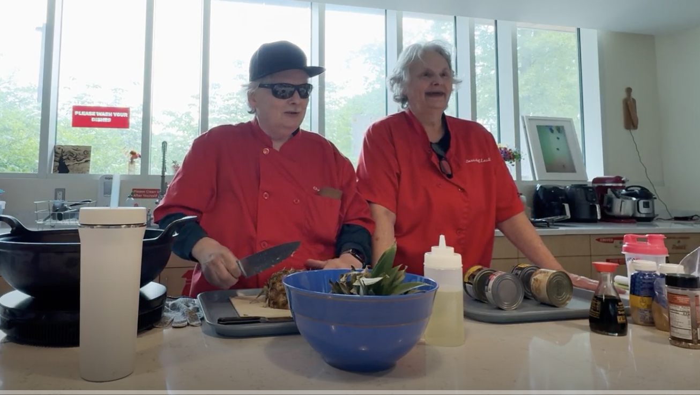
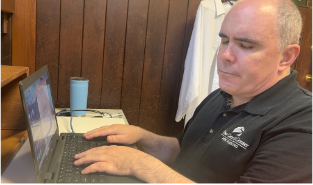
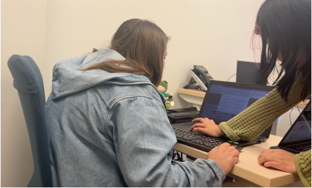

Assignment 3
Learning Objectives
- Understand how human-centered design ideas can play a role in developing machine learning-powered technologies.
- Get some practice mapping interviews onto design insights.
- Learn about retrieval metrics for retrival tasks.
Human-Centered Design in Machine Learning
Before we engage in detail with the design process that led to the creation of the EchoMinds app, we’d like to establish some shared concepts around human-centered design. We know that not everyone has taken CD at Olin, so please read this short article on human-centered design and respond to the following prompts.
- How is the human-centered design process different from a classical design process?
- What do you think are the benefits of human-centered design? What are the drawbacks?
The article in the previous exercise gives us a 6-phase design process consisting of observation, ideation, rapid prototyping, user feedback, iteration, and implementation. Choose a particular area where machine learning technology might be able to solve a set or problems. For example, you might start with a particular people group (e.g., college students) or setting (e.g., factories). Sketch out how the human-centered design process might play out in this scenario. For each phase, list some of the main activities you would do and what you would hope to learn from them. From doing this exercise, what are the most important specifics to keep in mind when applying human-centered design to machine learning?
The EchoMinds Design Process
We will be using the EchoMinds App as a throughline in this course. Now that you’ve thought about the idea of using human-centered design in the process of creating machine learning-powered technology, we want you to engage with the specifics of the EchoMinds design process. As you engage, we invite you to consider what you liked about what the team did, and, potentially, what you would have done differently.
These were the major activities and phases of the team’s design process.
We have included links to many of the raw materials the students engaged with over the summer. We do not expect you to look at these raw materials directly. If you are curious, they are there for your review.
Please categorize the major activities of the summer team with respect to the human-centered design steps of observation, ideation, rapid prototyping, user feedback, iteration, and implementation. For each activity, comment on how the particular activity fit with the chosen stage of the design process (e.g., what might the important takeaways be from this activity to advance the design?). What aspects of the design process seem beneficial and you might emulate? What would you change (either specifics of an activity or adding new activities all together)?
Activity 1: Orientation
During the first two weeks of the summer, students engaged in the following activities.
- Listening to a presentation about their summer project (high-level goals, specific plans, research questions)
- Listening to a presentation on key concepts in disability justice
- Exploring with the Seeing AI app
- Students practiced doing fieldwork at a local senior center (here is a document summarizing key things to keep in mind when doing field work)

- Students listened to a presentation on blindness education at the Carroll Center sharepoint (the Carroll Center was their primary fieldwork site).
- Brian Switzer (of the Carroll Center) gave a presentation on access technology for people who are blind. This presentation covered digital access (e.g., screen readers) as well as emerging tools (e.g., large language models for visual interpretation).
- Brian Charlson (formerly of the Carroll Center) and his sister Lesli Charlson gave a demonstration of how a person who is blind cooks (Brian is blind). Brian will be with us next class.

- Students volunteered at a fundraiser for the Carroll Center called Walk for Independence. They helped run booths, direct cars into parking spaces, and worked as sighted guides for the participants in the walkathon.

-
Students learned how to interview people when doing fieldwork. They practiced by interviewing people from the Olin community (Interview tips)
- Students did secondary source research on employment for people who are blind (as that was the major topic area for the summer work)
- Students listened to a presentation on Design Justice
Activity 2: Initial Fieldwork
Students spent six hours per day at the Carroll Center for the Blind or Massachusetts Association for the Blind and Visually Impaired (MABVI). They were there to observe clients of the Carroll Center receiving training on how to live life with vision loss, do design activities to understand the opportunity space, and volunteer to help Carroll Center personnel with other projects.


Sample schedule for a fieldwork day:
- Morning Housekeeping (10:00 AM-10:30 AM), Tech Center Room 105
- Third period (10:35 AM-11:20 AM): Personal Management: Main Building, Personal Management Library
- Fourth period (11:30 AM-12:15 PM): Rehab Services: Tech Center Conference Room 208
- Lunch (12:15 PM-1:15 PM)
- Fifth period (1:15 PM-2:00 PM): Information Access: Main Building, Stalls
- Sixth period (2:10 PM-2:55 PM): Low vision: Main Building, Low Vision Clinic on second floor
- Debrief (3:00 PM-3:30 PM, Tech Center, Room 105)
Activity 3: Ideation
The team used their insights from their initial field work to come up with many ideas for how machine learning technology could play a role in some aspect of employment for people who are blind. These ideas were refined to a short list that were explored in the next phase.
Activity 4: Design Activities
Students downselected to three major idea categories.
- Machine learning-powered resume builder that would help create a visually appealing and tailored resume for a particular job posting.
- A machine learning-powered screen reader that would orient people on how to use a website non-visually and also describe any images or icons that did not have alt text.
- A machine learning-powered notetaking app that would allow people to take notes and retrieve them easily by using machine learning technology to find the most similar note given a query.
Students developed design activities to test these three concepts with community partners. These design activities used low-fidelity prototyping tools and role playing to allow an opportunity space to be explored quickly without actually building the underlying system.
Activity 5: Prototyping
Students decided to pursue the machine learning-powered notetaking app (now called EchoMinds). Students worked to
create an initial prototype on iOS that connected to a backend server running a text similarity model based on the
sentence_transformers Python library. We’ll be exploring the implementation of EchoMinds later in the course.
Activity 6: Internal Testing
Students ran an internal test where members of the research team tried to use the prototype for a notetaking task.The testing uncovered some key issues with how notes were managed within the app.
In the initial prototype, users took notes in a large text box. Behind the scenes, each separate line of text was turned into a note that could be retrieved through a note search. Since users did not understand the granularity that their notes were being analyzed, the lines of text in their notes were often short and hard to understand without the surrounding context. This caused the app to not perform well.
Activity 7: Notetaking Survey
Students ran a survey to understand in what contexts people who are blind take notes.
Activity 8: Refining Prototype
Students refined the prototype based on the feedback from the internal testing. This resulted in the following user experience (in reality the interface was iterated upon with feedback from community partners).
Activity 9: Testing With Community Partners
Students performed a final (for the summer) evaluation of EchoMinds. Testing was done with students at the Carroll Center for the blind, students at Olin, employees at Carroll Center for the Blind, and employees at MABVI.
As an example, here is the script for the final testing activity at the Carroll Center for the Blind.
We’ll get into evaluation a lot more in the next assignment.
Deep Dive into Human-Centered Design Activity
Please listen to this interview that Bela and Ethan did with Ashley, an employee at the Massachusetts Association for the Blind and Visually Impaired (MABVI). The goal of this interview was to get to know our community partners and to understand how they interact with technology in general and machine learning (or AI) specifically. What are your key takeaways from this interview? You could focus on important insights regarding Ashley’s use of AI, design insights that should be kept in mind when ideating on project directions, how the interview was conducted (what did you like, how might you do it differently), whether the interview seemed valuable to the overall design process, etc.